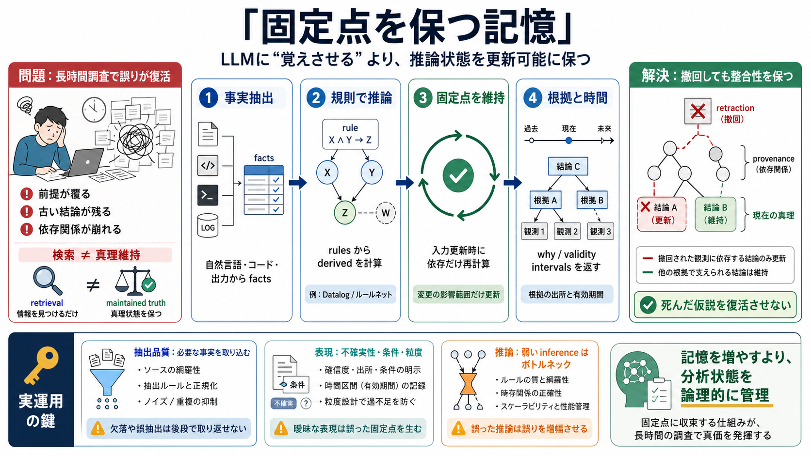

Medium
LLM evaluation tools in 2026 measure model performance across standardized benchmarks such as MMLU and GLUE, leverage fr…

LLM evaluation tools in 2026 measure model performance across standardized benchmarks such as MMLU and GLUE, leverage fr…
Analyzed 8/13/2026 MemSecBench follows malicious agent-memory content from initial write through persistence, retrieval…
A nuanced understanding is important for advancing the field with dedicated evaluation tasks. Mitigation strategies diff…
LLM Pricing: Major Providers Compared AI Memory Benchmark AI Agent Performance: Success Rates & ROI ## Cite this benc…
Beyond the techniques considered in this article, real-time Evaluation models offer another way to detect hallucations. …